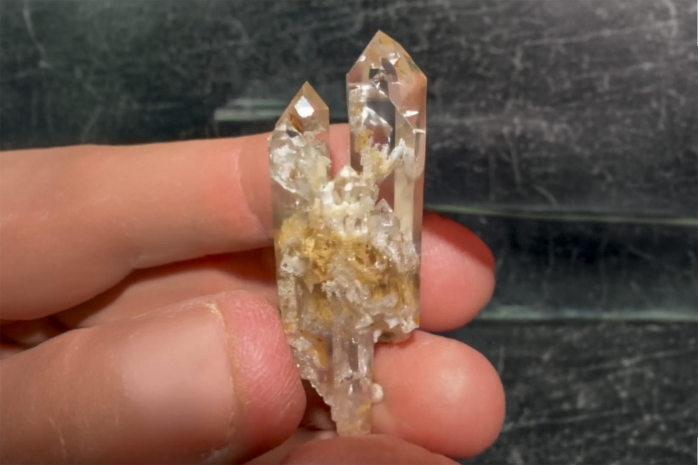

Quartz
"5 Crystal Regrowth Quartz"
VIII-09824
Talèfre Glacier, Chamonix, Chamonix-Mont-Blanc, Bonneville, Haute-Savoie, Auvergne-Rhône-Alpes, France
Purchased 3/21/2026 from MinCollect for $92.63
Core Collection • In Collection
Details
Storage Type: Drawer
Storage Location: C4D2 Quartz Miniatures
Size class: Cabinet (0)
Dimensions: 5.1 × 2.3 × 1.7 cm
Mass: 19.06 g
Luster: Above Average, Vitreous